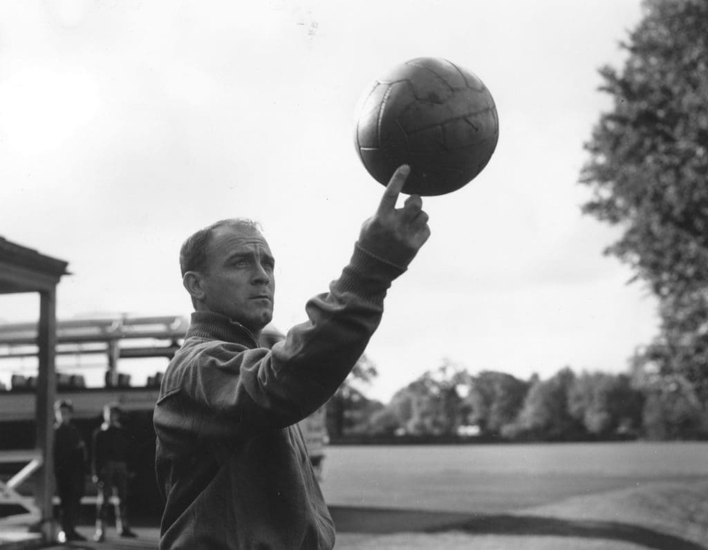

Alfredo Di Stéfano
Considerado uno de los mejores futbolistas de todos los tiempos, Di Stéfano fue clave en la época dorada del Real Madrid en los años 50 y 60.
Cristiano Ronaldo
El máximo goleador en la historia del club, Cristiano dejó una huella imborrable en el Real Madrid durante su etapa entre 2009 y 2018.